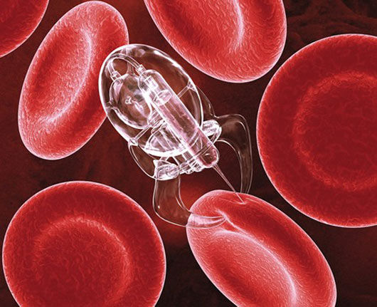

Medicina in nanotehnologija
Delovanje človeškega telesa, genetika, bolezni in zdravljenje bolezni. To so teme, ki so me kot posameznika že od nekdaj zanimale. Zato se mi je porodilo v glavi vprašanje »Zakaj ne bi povezal področja, ki so mi dokaj poznana z nečem o katerem sam veliko ne vem, ampak me vselej fascinira«. S takim razmišljanjem sem prišel do povezave med nanotehnologijo in medicino. Ko sem v internetni iskalnik vpisal »Nanotehnologija in medicina« se mi je nasmejalo soncem, saj se mi je odprlo popolnoma nova obzorje znanje… Zavedal sem se, da sem zadel terno.
Na tem odseku naše skupinske strani sem bom posvetil člankom, ki povezujejo dve vedi skupi in se meni osebno zdijo najbolj zanimiva in fascinantna. Raziskal bom različna področja in na podlagi že obstoječega znanje napisal članke, ki bodo razumljivi vsem. Pisal bom: o nano robotih in kako bi lahko z njimi v praksi zdravil raka, o tem kako bi lahko z nanotehnologijo vplivali na DNA,… Vsa področja bodo skrbno izbrana in pripravljena do te mere, da bodo obdržala vašo pozornost in vam odprla vpogled v prihodnost.
Na tem odseku naše skupinske strani sem bom posvetil člankom, ki povezujejo dve vedi skupi in se meni osebno zdijo najbolj zanimiva in fascinantna. Raziskal bom različna področja in na podlagi že obstoječega znanje napisal članke, ki bodo razumljivi vsem. Pisal bom: o nano robotih in kako bi lahko z njimi v praksi zdravil raka, o tem kako bi lahko z nanotehnologijo vplivali na DNA,… Vsa področja bodo skrbno izbrana in pripravljena do te mere, da bodo obdržala vašo pozornost in vam odprla vpogled v prihodnost.

Maketa nanobota v krvi